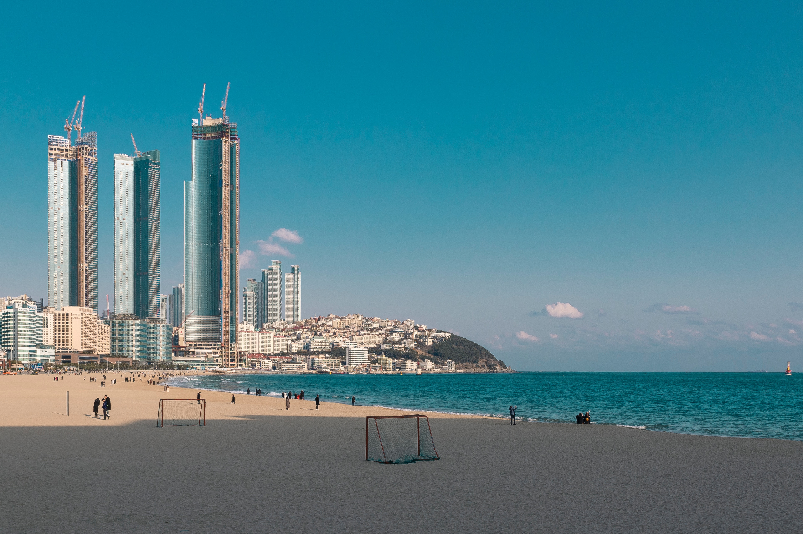

Go the the home!
Travel the Busan!
Introduce the Haeundae

Haeundae District is a district (gu) in eastern Busan, South Korea. It has an area of 51.44 km², and a population of about 423,000, or 11.6% of the population in Busan.[2] It became a division of Busan in 1976 and attained the status of gu in 1980.
Haeundae is an affluent beach front community that attracts tens of thousands of tourists during summer. It has been subject to considerable commercial development in recent decades.
The beach is linked to Busan Subway Line 2 and train stations on the Donghae Nambu railway line.
Select the place where you want to see in Busan
- Haeundae
- Gwanganri
- International market
- Gamcheon Culture Village
- Samrak Park